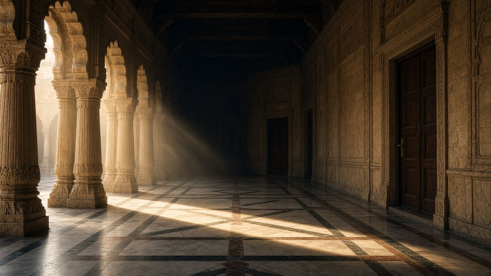

Главная · СМИ · СМИ · Блок IV · 2022–2024 · 07



Пустой министерский коридор: визуальный ряд к речи, которую подхватила вся индийская пресса.
СМИ 07 / 08 · Речь на форуме и индийская пресса
Джайшанкар на GLOBSEC: индийские газеты против евроцентризма
The Indian Express, Hindustan Times и Mint вынесли в заголовки фразу министра иностранных дел Индии на GLOBSEC в Братиславе: Европа должна перерасти мысль, будто её проблемы — проблемы всего мира. Это манифест независимой политики Дели — и ключ к тому, почему Нью-Дели не присоединился к санкциям.
Ссылки на публикации
Краткий конспект
- 3 июня 2022 на GLOBSEC в Братиславе С. Джайшанкар произносит фразу, ставшую заголовком всех крупных индийских газет.
- The Indian Express: «Europe has to grow out of the mindset that its problems are the world’s problems but the world’s problems are not Europe’s problems».
- Hindustan Times выносит другую формулу: «I am not sitting on the fence […] I am sitting on my ground».
- Mint разбирает нефтяной спор: Европа сама покупает российские энергоносители, но стыдит Индию за ту же закупку.
- Связка Китай–Украина, которую ему подсовывают в зале, он отводит: конфликт с КНР старше украинского и не требует «сделки» по лояльности Западу.
Полный конспект. Как писали СМИ
Что напечатали в Дели на следующее утро
The Indian Express 4 июня 2022 делает из братиславской реплики политический манифест. Министра спросили, как Индия после «молчания» по Украине будет просить помощи против Китая. Ответ, который цитируют все: Европа должна вырасти из привычки считать свои кризисы мировыми, а чужие — чужими. «China and India happened way before anything happened in Ukraine. […] I don’t see this frankly as a very clever argument, a very self-serving one.»
Hindustan Times в тот же день: Индия — пятая-шестая экономика и пятая часть человечества, она «имеет право на свою сторону». «My choices will not be cynical and transactional. They will be a balance of my values and my interests.» Mint собирает «key points» по нефти: новый пакет санкций ЕС сконструирован с заботой о европейском потребителе; «if you can be considerate to yourself, surely you can be considerate to others».
Почему это медиасобытие, а не только речь
GLOBSEC — атлантистский форум. Произнести там отказ от евроцентризма и защитить закупки российской нефти — значит дать индийским газетам цитату, которую больше не нужно объяснять через «давление Москвы». Пресса Дели читает это как суверенитет, европейская — как уклонение. Для блока IV архива важен именно газетный слой: Independent Asia говорит своим голосом, и этот голос напечатан не в пропагандистском листке, а в Indian Express и Hindustan Times.
Ключевые цитаты
Europe has to grow out of the mindset that Europe’s problems are the world’s problems but the world’s problems are not Europe’s problems.
S. Jaishankar, GLOBSEC 2022, цитата The Indian Express
I am not sitting on the fence just because I don’t agree with you. It means I am sitting on my ground.
Hindustan Times, 3.06.2022
Тексты изданий на сайт не копировались целиком — только конспект и ссылка.
Открыть The Indian Express| ← 06. «85% мира»: как пресса разнесла тезис Махб… | Все материалы СМИ | 08. Ван И в Мюнхене-2024: Китай в западной и к… → |